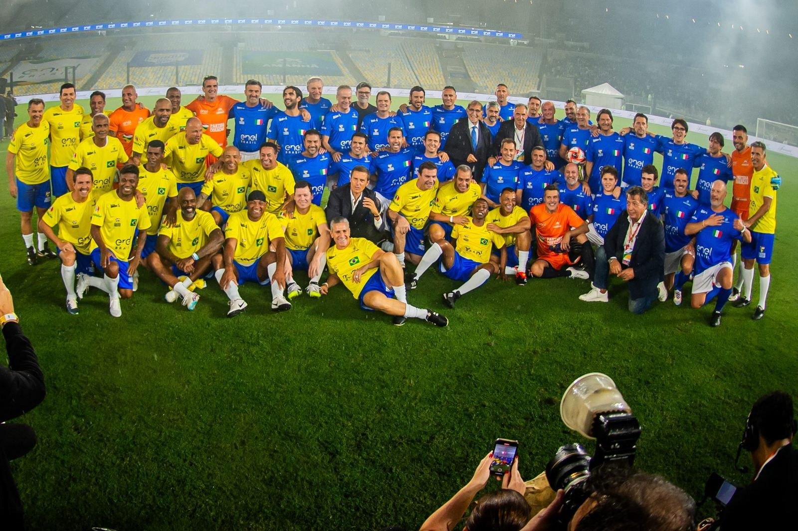
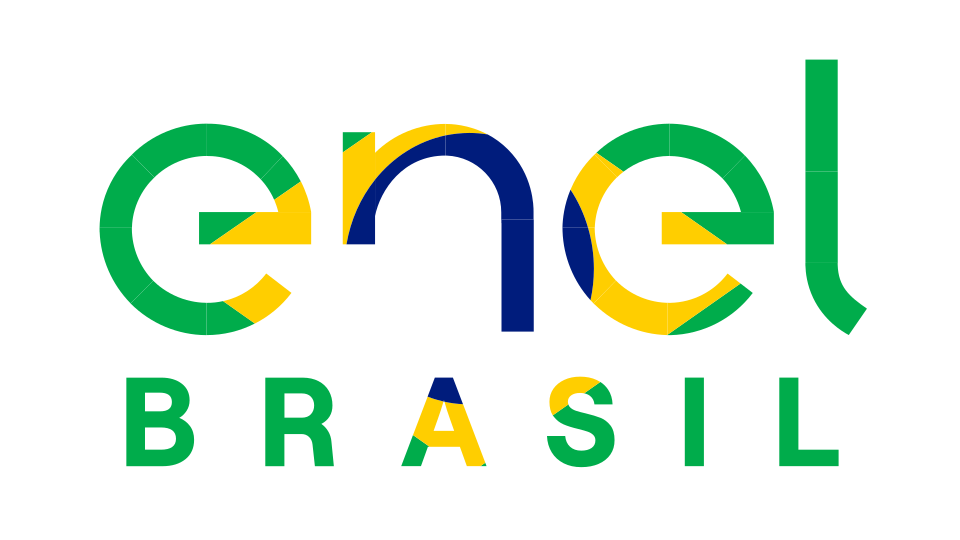
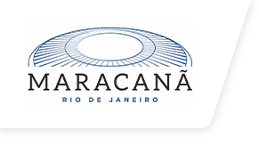
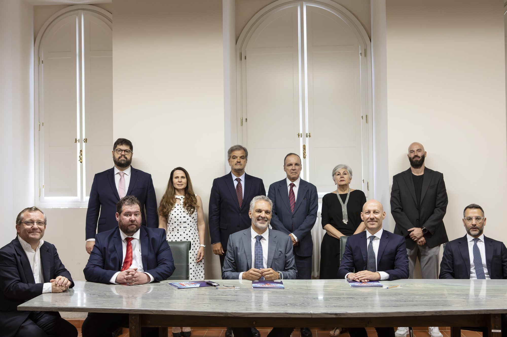
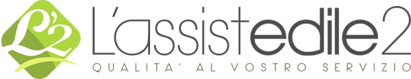

Institucional
Apoio a organizações e empresas na construção de relações institucionais.
Da representação a eventos, de parcerias a joint ventures internacionais: um ponto de referência para iniciativas que exigem credibilidade, rede de contatos e coordenação.
O que faço
O trabalho institucional exige uma rede sólida, comunicação calibrada e a capacidade de transitar entre atores com culturas, idiomas e objetivos diferentes. Apoio empresas e organizações na construção de relações duradouras com contrapartes institucionais italianas e internacionais: organismos públicos, embaixadas, câmaras de comércio, parceiros estratégicos.
Não se trata apenas de ser um intermediário. Trata-se de construir contextos nos quais as relações se tornam oportunidades reais: acordos, visibilidade, colaborações comerciais e iniciativas compartilhadas com impacto mensurável.
Representação institucional
Apoio empresas e organizações na construção de uma presença autorizada em contextos institucionais, tanto nacionais quanto internacionais. Identifico as contrapartes certas e facilito o diálogo com organismos, embaixadas e instituições de referência.
Gestão de eventos e parcerias
Coordeno o planejamento e a execução de eventos institucionais, cerimônias, parcerias público-privadas e iniciativas co-branded com atores de alto perfil. Da logística à comunicação, até o gerenciamento de relacionamentos durante o evento.
Relações internacionais
Apoio iniciativas de internacionalização, joint ventures e acordos entre atores italianos e estrangeiros.
Alguns exemplos de colaboração.

October 2025 · Rio de Janeiro
Partida do Coração no Maracanã com a Enel Rio
Apoio ao patrocinador na comunicação da Partida do Coração, uma partida beneficente gratuita no Maracanã promovida pela Enel Rio em parceria com o projeto Craque do Amanhã. A iniciativa levou milhares de crianças das favelas do Rio de Janeiro a conhecer o templo do futebol mundial.
O projeto envolveu parcerias institucionais, coordenação logística e atividades de comunicação de apoio à narrativa social do evento, com um forte componente de relações públicas entre Itália e Brasil.



July 2025 · Rome, Piazza Navona
Assinatura de joint venture na Embaixada do Brasil em Roma
Em julho de 2025, na sede da Embaixada do Brasil na Itália na Piazza Navona, em Roma, apoiei o lançamento de uma joint venture entre uma empresa italiana e uma brasileira. A cerimônia de assinatura ocorreu na presença do Embaixador Renato Mosca e do Cônsul do Brasil na Itália.
O processo incluiu coordenação das partes, gestão das relações diplomáticas, apoio à comunicação do acordo e ligação com as instituições bilaterais envolvidas.

Para quem este apoio é útil
Trabalho com empresas e organizações que buscam construir ou fortalecer sua presença em contextos institucionais, que desejam desenvolver relações internacionais concretas ou que precisam gerenciar iniciativas com múltiplos atores envolvidos.